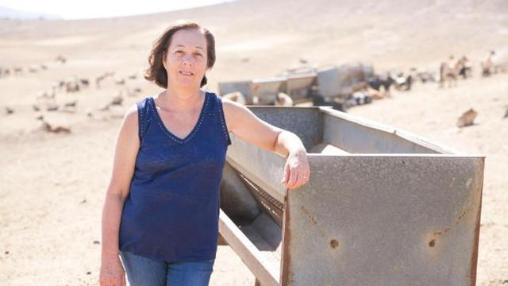
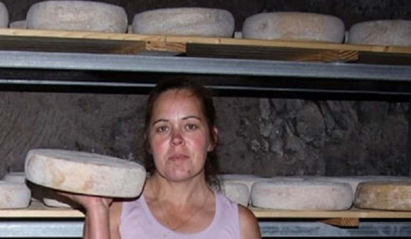
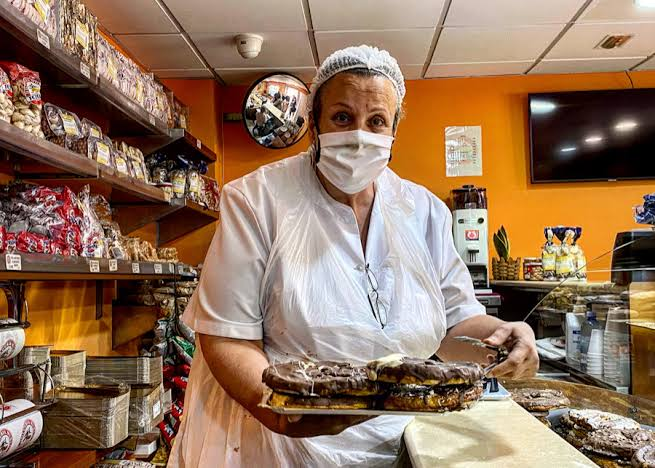

representan una parte esencial del tejido social, económico y cultural de la isla. Su trabajo ha sostenido durante décadas actividades clave como la agricultura, la ganadería, la artesanía y la gestión comunitaria, especialmente en municipios del interior como Tejeda, Valsequillo, San Mateo, Gáldar, Artenara o Santa Lucía de Tirajana.
A pesar de vivir en un territorio marcado por la dispersión geográfica y la limitada disponibilidad de recursos, estas mujeres han desarrollado formas de organización y resiliencia que han permitido mantener vivas tradiciones, economías locales y modos de vida vinculados al paisaje canario.
A lo largo de la historia, las mujeres rurales de Gran Canaria han sido mucho más que trabajadoras del campo: han sido gestoras del territorio, transmisoras de la cultura insular y sostenedoras de la vida comunitaria en los pueblos del interior. Su presencia ha marcado profundamente la identidad de zonas como Tejeda, Artenara, San Mateo, Valsequillo, Gáldar o Santa Lucía, donde la agricultura y la ganadería han sido pilares económicos durante generaciones.
Estas mujeres han desarrollado un conocimiento íntimo del paisaje canario: saben cuándo sembrar, cómo conservar el agua, cómo proteger los cultivos del viento y cómo aprovechar cada recurso natural sin agotar la tierra. Su relación con el entorno no es solo laboral, sino también cultural y emocional. En muchos casos, han sido ellas quienes han mantenido vivas prácticas tradicionales como la elaboración de gofio, los quesos artesanales, los bordados, los trajes típicos y las técnicas de cultivo adaptadas al clima seco y montañoso de la isla.
Además, su papel ha sido decisivo en la cohesión social de los pueblos. Han organizado asociaciones vecinales, cooperativas agrícolas, redes de apoyo entre familias y actividades comunitarias que han permitido sostener la vida en zonas donde los servicios públicos son escasos y la dispersión geográfica dificulta el acceso a recursos básicos. En tiempos de crisis, han sido las primeras en movilizarse para garantizar alimentos, cuidados y estabilidad en sus comunidades.
Sin embargo, este trabajo ha sido históricamente invisible. Durante décadas, las mujeres rurales han quedado fuera de los espacios de decisión, de los registros oficiales y de los reconocimientos institucionales. Aunque su labor era esencial, rara vez aparecía en documentos, estadísticas o discursos públicos. Esta invisibilidad ha contribuido a que muchos de sus conocimientos tradicionales estén en riesgo de perderse, especialmente ante la falta de relevo generacional y la migración de jóvenes hacia zonas urbanas.
Hoy en día, su papel está siendo revalorizado. Diversos proyectos insulares buscan integrar a las mujeres rurales en procesos de innovación agrícola, digitalización, emprendimiento y gestión sostenible del territorio. Se reconoce que su experiencia es clave para enfrentar desafíos actuales como el cambio climático, la conservación del paisaje, la soberanía alimentaria y la revitalización de los pueblos del interior.
Las mujeres rurales canarias representan, en definitiva, una memoria viva que conecta pasado y futuro. Son guardianas de la identidad cultural de Gran Canaria y protagonistas silenciosas de su resiliencia. Su trabajo, muchas veces realizado desde la discreción y el esfuerzo cotidiano, sostiene una parte fundamental de la isla que no siempre se ve, pero que siempre está ahí: la vida rural que da sentido al territorio.
| mujer | isla/municipio | sector | que hizo y por que es importante |
|---|---|---|---|
| Felipa Valdivia Jiménez
 |
Fuerteventura | Ganadera y quesera | Propietaria de Ganadería Quesos Felipa La Montañeta. Premio Mujer Rural de Canarias 2018 por liderar una empresa familiar con fuerte carácter femenino |
| Juani Vega Artiles
|
Gran Canaria | Desarrollo Rural | Técnica de AIDER Gran Canaria desde 2000, trabaja con Leader incorporando enfoque de género y juventud. Distinguida con Premio Mujer Rural 2018 por visibilizar a las mujeres rurales |
| Ana María Vega Gil
 |
Gran Canaria - Sta. Mª de Guía | Quesera | Marca Cortijo de Pavón. Referente del queso de flor de Guía, mantiene pastoreo y transformación con leche cruda |
| Rosa María Medina
 |
Gran Canaria - Tejeda | Agroalimentación dulce | Dirige Dulcería Roque Nublo, una de las más antiguas de Canarias. Procesa 30.000 kilos de almendra local al año con método artesanal sin conservantes |
| Lucía González
|
Gran Canaria - Moya | Agricultura ecológica | Finca La Sombra. Avicultora y hortelana ecológica certificada por el ICCA, con huevos y hortalizas ecológicas |